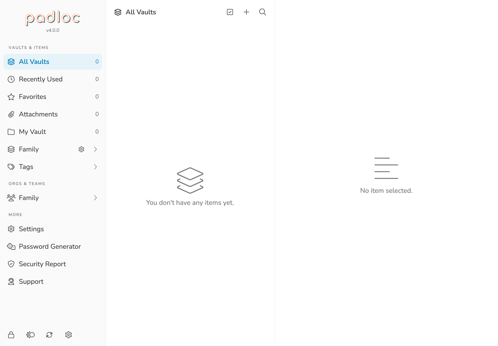
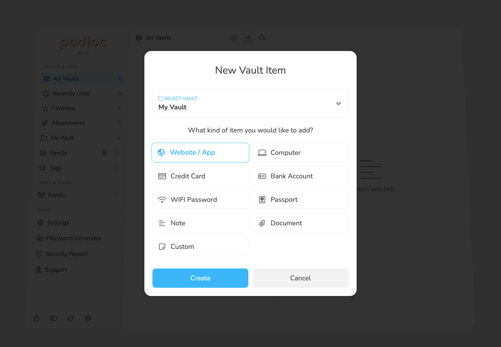
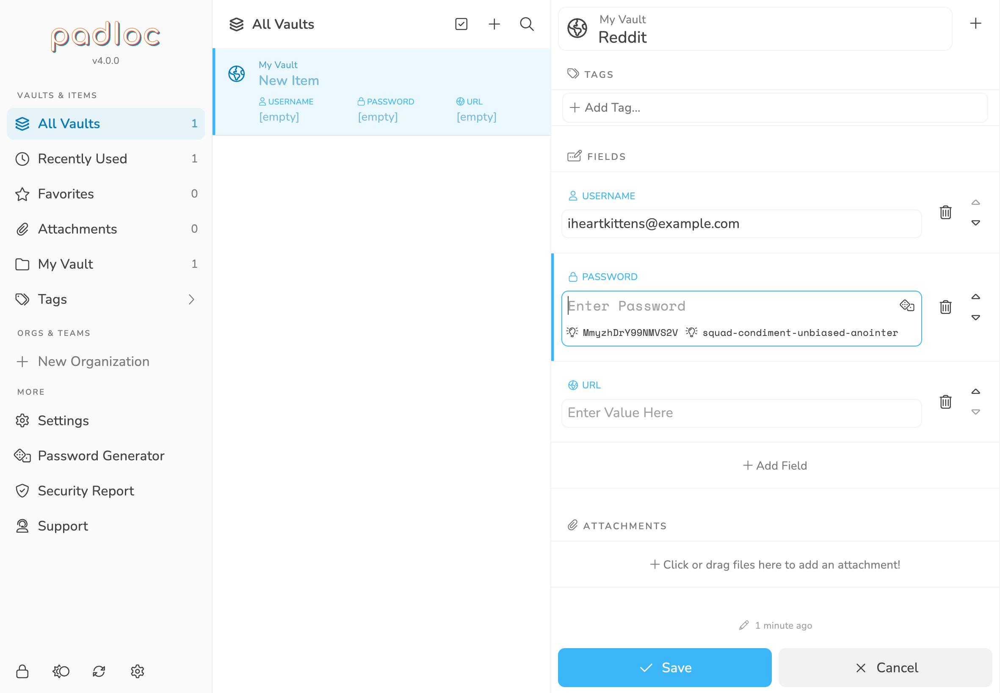
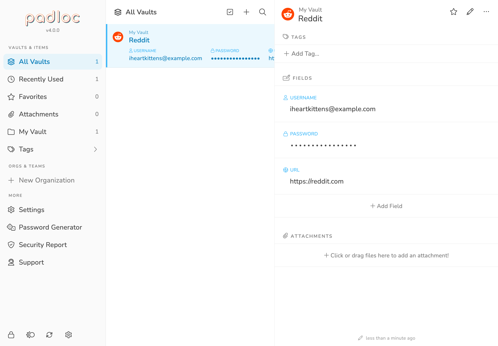
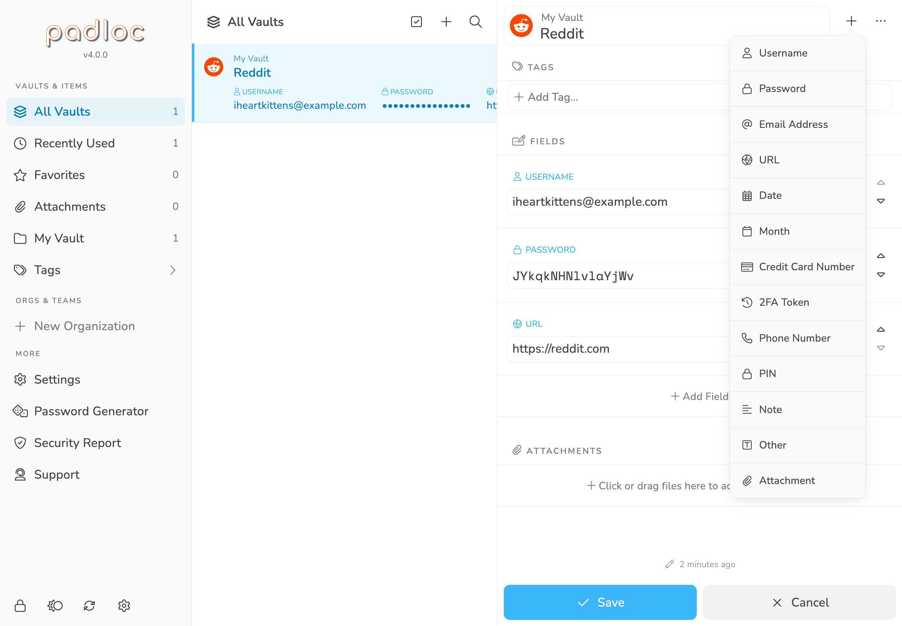
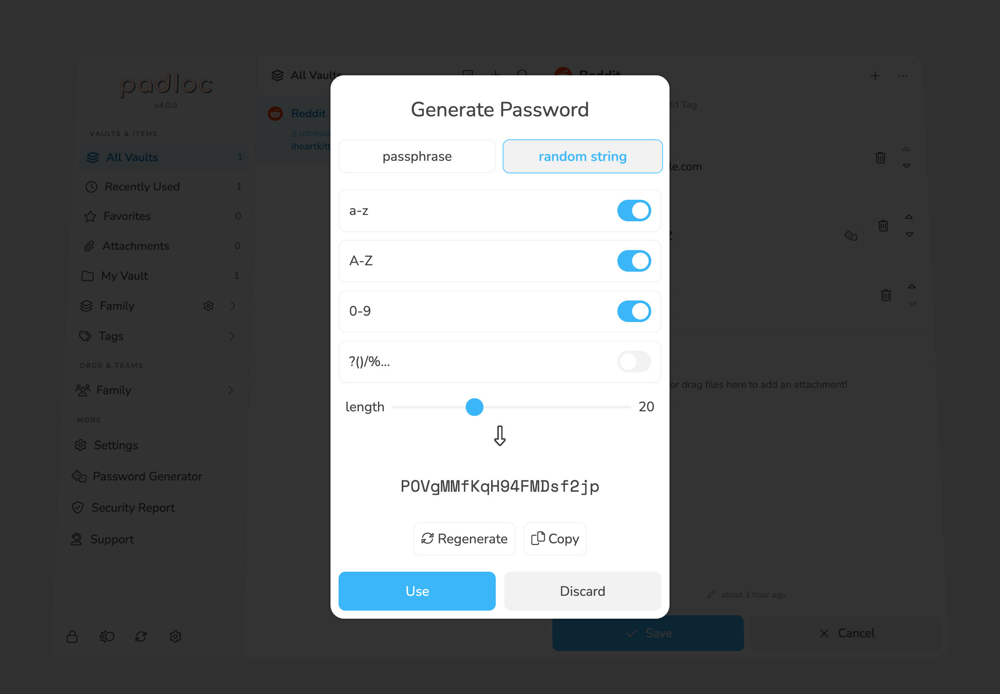
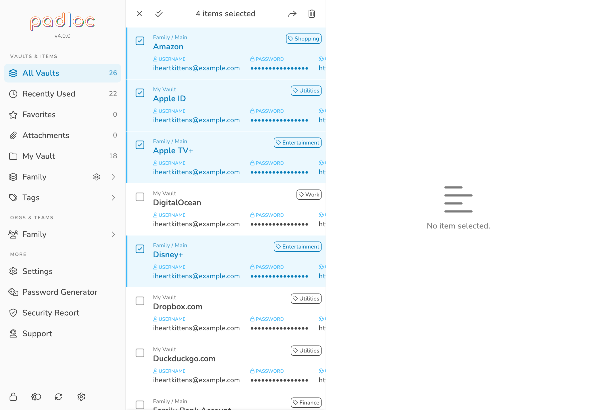
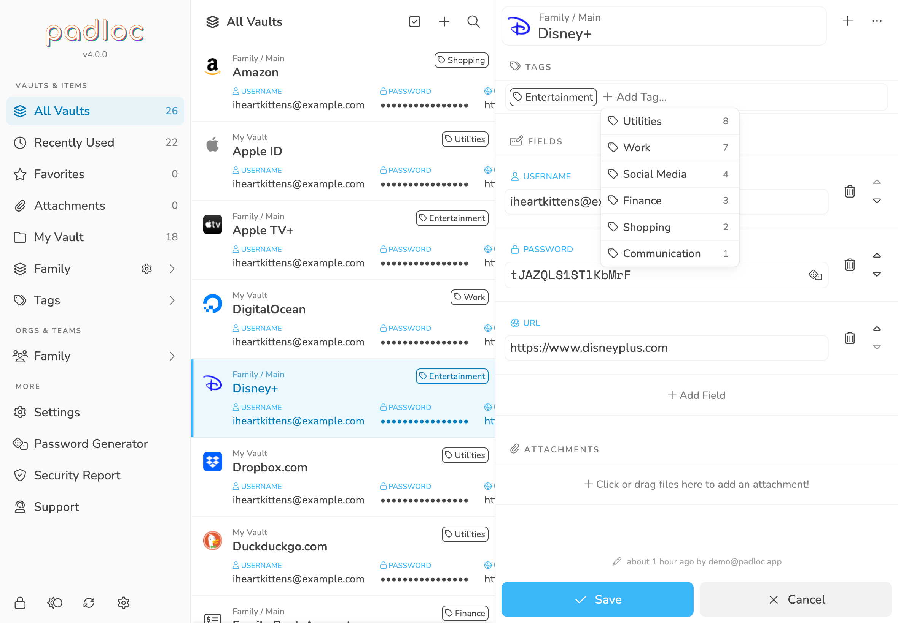
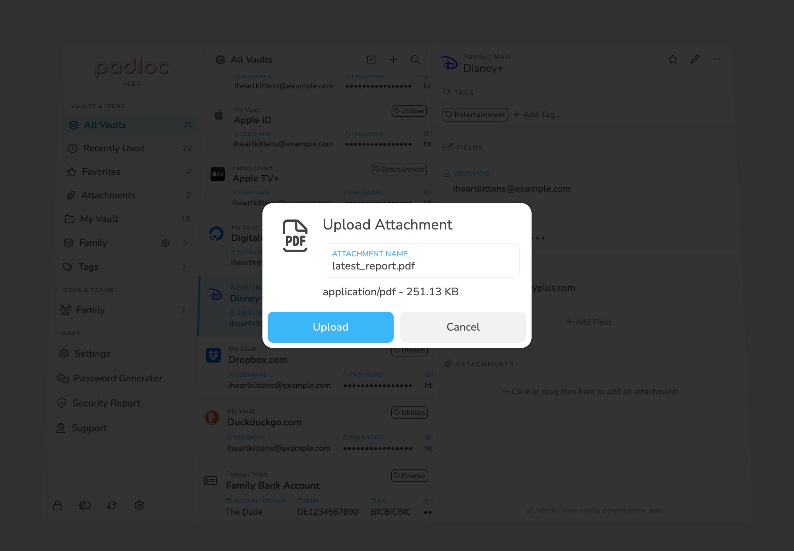

Vaults & Vault Items
After creating your Padloc account and opening Padloc, the first thing you'll be greeted with is the message You don't have any [vault] items yet.

This is not surprising, since we haven't done anything yet! But what are vault items, you might ask, and what do I do with them?
Vault Items (or simply "Items") are individual data entries that can hold all kinds of information, from secret notes and WIFI passwords, to credit card numbers, bank details and even encrypted files! Most of these items will likely contain usernames and passwords for websites and apps (it's called a "password manager" after all), but Padloc gives you absolute freedom in what kind of information you'd like to store in your Vault Items (more about that below).
As you might have guessed, Vaults are where your Vault Items are stored. You can imagine them as secure folders that are protected by your master password and can hold any number of Items. You'll start off with a single Vault called "My Vault". This vault is meant only for you and is where you'll to store all your personal data. For a lot of users, one Vault will be more than enough, as it can hold an arbitrary number or items and there are plenty of ways to organize and discover items within it (you can read more about that in the Searching & Filtering section). If you want to learn about how to create new Vaults and share them with other Padloc users, check out Organizations & Shared Vaults.
Vaults are protected by strong, state of the art encryption and can only accessed by you (and other Padloc users you explicitly give access). Not even we can read what's inside, even if we wanted to!
Creating Vault Items
Ok, enough theory. Now that we know what Vaults and Vault Items are, let's go ahead and create your first Vault Item! To get started, click on the little icon on the top!

Look at all those options! We didn't lie when we said that Padloc can store all kinds of information. In fact, you have absolute freedom in deciding what kind of data your vault items should hold. The options presented here are merely predefined templates provided for your convenience and you can always add and remove data as the mood strikes you (more about how that works in a moment). Notice that you can also choose which Vault to save the item to. We only have one Vault at this point so that one will have to do (to learn how to create new Vaults and share them with others, check out Organizations & Shared Vaults). Let's select Website / App and see where that get's us. Click to continue.

Now we're getting somewhere! Since we chose the Website / App template, Padloc has added the fields Username, Password and URL for us. Again, these are just the default fields for this template. You can add and remove fields and edit field names at any time. For now, let's just fill this out and click . Don't forget to add an item name by filling out the field in the top!
Nobody likes typing, so whenever you click into a field, Padloc will suggest values for you based on the field type. For example, when you click into the password field, Padloc will automatically generate a number of random passwords for you! Simply click on one of the suggestions to apply them.

And there it is - your first Vault Item! But if you think we're done here you couldn't be more wrong! We've only scratched the surface...
Editing Vault Items
To edit an item, simply select it from the list and then click the little bottom in the top right. The item will be opened in "edit mode" and you can now make all the desired changes.
Once you're done, simply hit the button again to save your changes. Or you can always hit to discard your changes of course!
Adding Fields
As mentioned before, Padloc gives you absolute control over what kind of information you want to store in your items. A username and password and maybe a url might be sufficient for most items, but you never know what other kind of information you may want to store alongside them. For example, a website may ask you to enter a security question and answer, or maybe you simply want to add some notes and comments.
Adding new fields to an Item is easy - in edit mode, click the button in the top right corner. You'll be presented with a few different field types to choose from. Simply pick the one that fits the kind of data you want to store and then fill out the field. Don't forget to hit to save your changes!

Deleting Fields
To delete a field, first enter edit mode and then click the the button next to the field you want to remove. Confirm the action by clicking , and then save your changes using the button.
Reordering Fields
Apart from adding, editing and removing fields, you can also reorder them by using the and buttons on the right side when id edit mode. Don't forget to hit to save your changes!
Generating Passwords
Now that Padloc is remembering all your passwords for you, there is no more excuse to use pet names or birthdays for them! A good password should be completely random, sufficiently long and extremely hard to guess. Coming up with truly random passwords is hard though, so you'll likely need some help. Luckily, Padloc has a build in password generator! Let's see how that works - see the little icon next to the password field? Clicking it will bring up the password generator.

You can choose between a random passphrase similar to the one suggested to you during the signup process or a string of random characters. A passphrase will be easier to copy manually in cases where you don't have the option to copy & paste but some websites have very specific password requirements you might have to go with the random string option where you can choose what kind of characters you be used in the password. If for some reason the generated password doesn't work for you you can regenerate it by clicking .
Once you're happy with the result, click and the generated password will be automatically copied into the appropriate field. Or you choose and leave your password as-is.
Did you know? If you click into an empty password field, Padloc will automatically generate a few random password suggestions for you, which will show up right underneath your cursor. Simply click one of them to use it!
Deleting Items
To delete an item, first enter edit mode, then click the button in the top right corner. This will open a popup menu with a couple of options. Select and then to confirm.
Warning: Deleting Items is permanent! So please check twice before deleting anything.
Deleting Multiple Items
Sometimes you just need to clean house, and deleting one Item at a time simply won't cut it. To delete multiple items at once, start by clicking the button in the header on the top of the list view. Now select any items you want to delete by clicking on them and then click the button in the top right corner. You'll have to confirm you choice by clicking the button.

Moving Items Between Vaults
Once you have more than one vault, you may occasionally want to move an item from one vault to a different one. To do this, simply enter edit mode and select the option from the menu.
Tip: Same as with deleting multiple items, you can move multiple items at once via the multi-select mode in the list view.
Tags
Tags are a simple but powerful way to organize items by type, areas of use or any other criteria you can come up with. This not only provides additional context but also makes item more discoverable (even across multiple vaults). To add a tag to an item, enter edit mode and click on the input and start typing. Hit enter or click on one of the suggested tags to add it.

You can add as many tags to an item as you want. Once a tag has been added to any item, it will show up in the menu under "Tags". For more info on how to filter items by tags an other criteria, check out the Searching & Filtering section of the manual.
Favorites
To add an item to your favorites, simply click the button next to the item name (you don't have to go into edit mode for this). Once favorited, an item will show up under Favorites in the main menu and will be highlighted in the list view. To remove an item from your favorites, simply click the button again.
Attachments
Fields allow you store all kinds of text-based information within your vault items - but sometimes that just isn't enough. After all, a lot of sensitive information is stored within pdf documents, spreadsheets, photos and all kinds of other files. Attachments allow you to securely store those documents alongside your vault items.
Adding Attachments is one of the advanced features only available in the Premium, Family, Team or Business plans.
To attach a file to a vault item, simply click the area below Attachments and the select the file you which to attach to the item. Once you've picked the file, you'll be take to the upload dialog where you can change the attachment name. Click to complete the process.
You can store any kind of file within Padloc as long as it is within the 5 MB size limit and you can add as many as many attachments as you want!

Creating New Vaults
Tags and Favorites should me more than enough to organize your vault items within your private vault. Creating additional vaults is meant primarily for the purpose of organizing and sharing items among multiple Padloc users. To create more vaults, you'll first have to create an organization to attach them to. To learn more about how this works, check out the Organizations & Shared Vaults section of the manual.